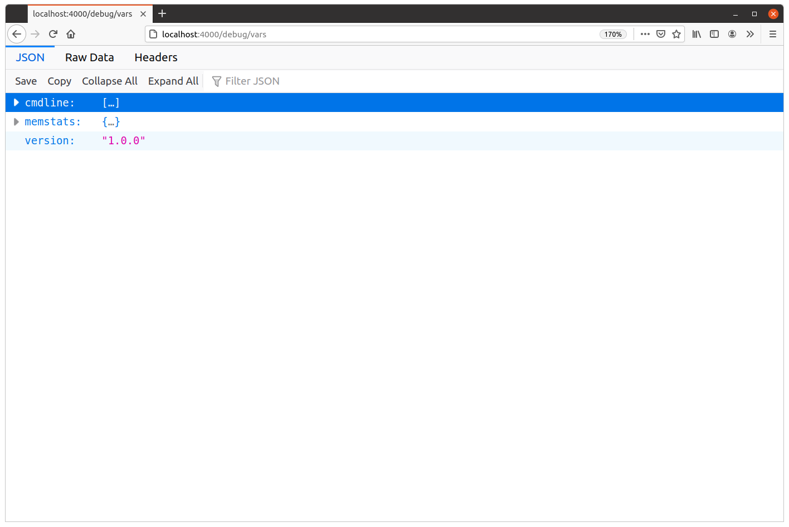
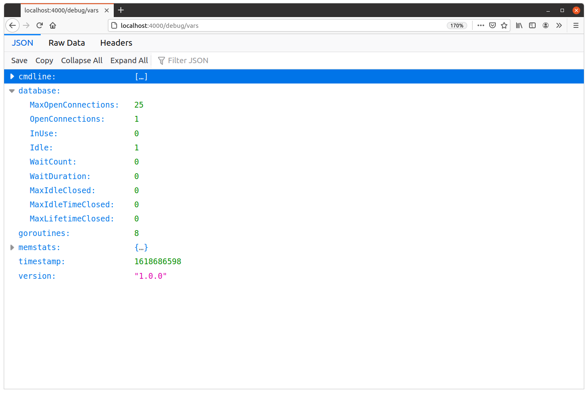
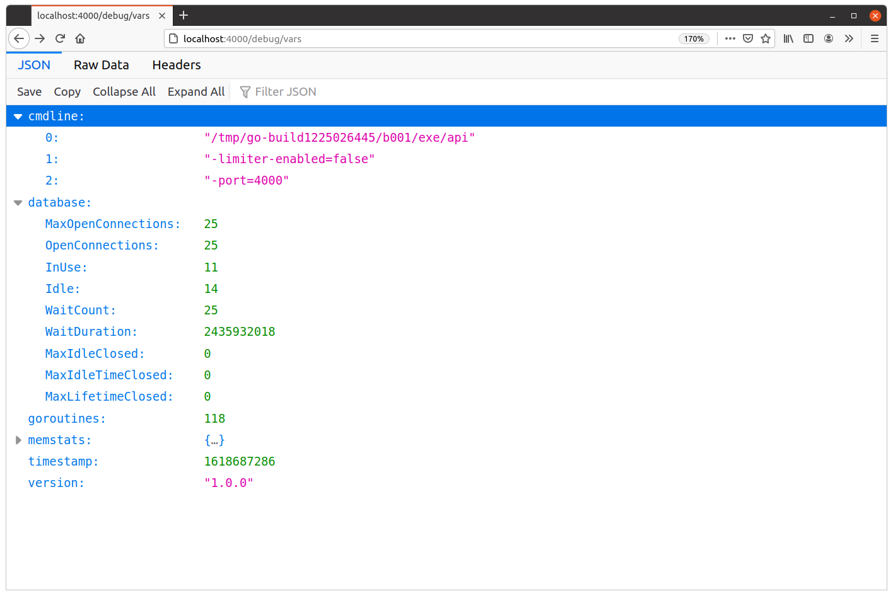

ایجاد معیارهای سفارشی
اطلاعات پیشفرضی که توسط handler expvar ارائه میشود، نقطه شروع خوبی است، اما میتوانیم با نمایش برخی معیارهای سفارشی اضافی در پاسخ JSON، آن را مفیدتر کنیم.
برای نشان دادن این موضوع، با یک مثال ساده شروع میکنیم و ابتدا نسخه برنامه خود را در JSON نمایش میدهیم. اگر به یاد ندارید، شماره نسخه در حال حاضر به عنوان یک ثابت رشتهای "1.0.0" در فایل main.go ما تعریف شده است.
کد انجام این کار به دو مرحله اصلی تقسیم میشود: ابتدا باید یک متغیر سفارشی با پکیج expvar ثبت کنیم، و سپس باید مقدار خود متغیر را تنظیم کنیم. در یک خط، کد تقریباً به این صورت است:
expvar.NewString("version").Set(version)
بخش اول این کد — expvar.NewString("version") — یک نوع expvar.String جدید ایجاد میکند، سپس آن را منتشر میکند تا در پاسخ JSON handler expvar با نام "version" ظاهر شود، و سپس یک اشارهگر به آن برمیگرداند. سپس از متد Set() روی آن استفاده میکنیم تا یک مقدار واقعی به اشارهگر اختصاص دهیم.
دو نکته دیگر:
- نوع
expvar.Stringبرای استفاده همزمان ایمن است. بنابراین — اگر بخواهید — میتوانید این مقدار را در زمان اجرا از handlerهای برنامه خود تغییر دهید. - اگر سعی کنید دو متغیر
expvarبا همان نام ثبت کنید، هنگام ثبت متغیر تکراری، یک panic در زمان اجرا دریافت خواهید کرد.
بیایید این کد را در تابع main() خود ادغام کنیم، به این صورت:
package main import ( "context" "database/sql" "expvar" // New import "flag" "log/slog" "os" "strings" "sync" "time" "greenlight.alexedwards.net/internal/data" "greenlight.alexedwards.net/internal/mailer" _ "github.com/lib/pq" ) // Remember, our version number is just a constant string (for now). const version = "1.0.0" ... func main() { ... // Publish a new "version" variable in the expvar handler containing our application // version number (currently the constant "1.0.0"). expvar.NewString("version").Set(version) app := &application{ config: cfg, logger: logger, models: data.NewModels(db), mailer: mailer, } err = app.serve() if err != nil { logger.Error(err.Error()) os.Exit(1) } } ...
اگر API را مجدداً راهاندازی کنید و http://localhost:4000/debug/vars را در مرورگر خود باز کنید، اکنون باید یک آیتم "version": "1.0.0" در JSON ببینید.
مشابه این:

معیارهای پویا
گاهی اوقات ممکن است بخواهید معیارهایی را منتشر کنید که نیاز به فراخوانی کد دیگر — یا انجام نوعی پیشپردازش — برای تولید اطلاعات لازم دارند. برای کمک به این کار، تابع expvar.Publish() وجود دارد که به شما امکان میدهد نتیجه یک تابع را در خروجی JSON منتشر کنید.
به عنوان مثال، اگر بخواهید تعداد goroutineهای فعال فعلی را از تابع runtime.NumGoroutine() Go منتشر کنید، میتوانید کد زیر را بنویسید:
expvar.Publish("goroutines", expvar.Func(func() any { return runtime.NumGoroutine() }))
نکته مهمی که باید به آن اشاره کنیم این است که مقدار any که از این تابع برمیگردد باید بدون هیچ خطایی به JSON کدگذاری شود. اگر نتواند به JSON کدگذاری شود، از خروجی expvar حذف شده و پاسخ از endpoint GET /debug/vars ناقص خواهد بود. هر خطایی به صورت خاموش نادیده گرفته میشود.
در مورد کد نمونه بالا، runtime.NumGoroutine() یک نوع int معمولی برمیگرداند — که به یک عدد JSON کدگذاری میشود. بنابراین مشکلی در اینجا وجود ندارد.
خب، بیایید این کد را به تابع main() خود اضافه کنیم، همراه با دو تابع دیگر که:
- اطلاعاتی درباره وضعیت pool اتصال پایگاه داده ما (مانند تعداد اتصالات idle و در حال استفاده) از طریق متد
db.Stats()منتشر میکنند. - زمان Unix فعلی با دقت ثانیه را منتشر میکنند.
package main import ( "context" "database/sql" "expvar" "flag" "log/slog" "os" "runtime" // New import "strings" "sync" "time" "greenlight.alexedwards.net/internal/data" "greenlight.alexedwards.net/internal/mailer" _ "github.com/lib/pq" ) ... func main() { ... expvar.NewString("version").Set(version) // Publish the number of active goroutines. expvar.Publish("goroutines", expvar.Func(func() any { return runtime.NumGoroutine() })) // Publish the database connection pool statistics. expvar.Publish("database", expvar.Func(func() any { return db.Stats() })) // Publish the current Unix timestamp. expvar.Publish("timestamp", expvar.Func(func() any { return time.Now().Unix() })) app := &application{ config: cfg, logger: logger, models: data.NewModels(db), mailer: mailer, } err = app.serve() if err != nil { logger.Error(err.Error()) os.Exit(1) } } ...
اگر API را مجدداً راهاندازی کنید و endpoint GET /debug/vars را دوباره در مرورگر خود باز کنید، اکنون باید آیتمهای اضافی "database"، "goroutines" و "timestamp" را در JSON ببینید. به این صورت:

در مورد من، میتوانم ببینم که برنامه در حال حاضر 8 goroutine فعال دارد و pool اتصال پایگاه داده در وضعیت ‘اولیه’ خود با فقط یک اتصال idle قرار دارد (که هنگام فراخوانی db.PingContext() توسط کد ما در هنگام راهاندازی ایجاد شده است).
اگر مایل باشید، میتوانید از ابزاری مانند hey برای تولید تعدادی درخواست به برنامه خود استفاده کنید و ببینید این اعداد تحت بار چگونه تغییر میکنند. به عنوان مثال، میتوانید یک دسته درخواست به endpoint POST /v1/tokens/authentication (که کند و پرهزینه است زیرا یک رمز عبور bcrypt-hashed را بررسی میکند) به این صورت ارسال کنید:
$ BODY='{"email": "alice@example.com", "password": "pa55word"}'
$ hey -d "$BODY" -m "POST" http://localhost:4000/v1/tokens/authentication
Summary:
Total: 8.0979 secs
Slowest: 2.4612 secs
Fastest: 1.6169 secs
Average: 1.9936 secs
Requests/sec: 24.6977
Total data: 24975 bytes
Size/request: 124 bytes
Response time histogram:
1.617 [1] |■
1.701 [6] |■■■■■
1.786 [10] |■■■■■■■■■
1.870 [26] |■■■■■■■■■■■■■■■■■■■■■■■
1.955 [36] |■■■■■■■■■■■■■■■■■■■■■■■■■■■■■■■
2.039 [46] |■■■■■■■■■■■■■■■■■■■■■■■■■■■■■■■■■■■■■■■■
2.123 [36] |■■■■■■■■■■■■■■■■■■■■■■■■■■■■■■■
2.208 [21] |■■■■■■■■■■■■■■■■■■
2.292 [12] |■■■■■■■■■■
2.377 [4] |■■■
2.461 [2] |■■
Latency distribution:
10% in 1.8143 secs
25% in 1.8871 secs
50% in 1.9867 secs
75% in 2.1000 secs
90% in 2.2017 secs
95% in 2.2642 secs
99% in 2.3799 secs
Details (average, fastest, slowest):
DNS+dialup: 0.0009 secs, 1.6169 secs, 2.4612 secs
DNS-lookup: 0.0005 secs, 0.0000 secs, 0.0030 secs
req write: 0.0002 secs, 0.0000 secs, 0.0051 secs
resp wait: 1.9924 secs, 1.6168 secs, 2.4583 secs
resp read: 0.0000 secs, 0.0000 secs, 0.0001 secs
Status code distribution:
[201] 200 responses
اگر در حین اجرای ابزار hey از endpoint GET /debug/vars بازدید کنید، باید ببینید که معیارهای برنامه شما اکنون بسیار متفاوت به نظر میرسند:

در لحظهای که این اسکرینشات را گرفتم، میتوانیم ببینیم که برنامه API من 118 goroutine فعال، 11 اتصال پایگاه داده در حال استفاده و 14 اتصال idle داشته است.
چند نکته جالب دیگر هم وجود دارد.
عدد WaitCount پایگاه داده که 25 است، تعداد کل دفعاتی است که برنامه ما مجبور شده برای در دسترس قرار گرفتن یک اتصال پایگاه داده در pool sql.DB ما صبر کند (زیرا تمام اتصالات در حال استفاده بودند). به همین ترتیب، WaitCountDuration مقدار تجمعی زمان (بر حسب نانوثانیه) صرف شده برای انتظار برای یک اتصال است. از اینها، میتوان محاسبه کرد که هنگامی که برنامه ما مجبور به انتظار برای یک اتصال پایگاه داده شد، زمان انتظار متوسط تقریباً 98 میلیثانیه بود. در حالت ایدهآل، در شرایط عادی بار در محیط production، باید صفر یا اعداد بسیار کمی برای این دو مورد ببینید.
همچنین، عدد MaxIdleTimeClosed تعداد کل اتصالاتی است که به دلیل رسیدن به حد ConnMaxIdleTime خود (که در مورد ما به طور پیشفرض روی 15 دقیقه تنظیم شده است) بسته شدهاند. اگر برنامه را در حال اجرا رها کنید اما از آن استفاده نکنید و پس از 15 دقیقه برگردید، باید ببینید که تعداد اتصالات باز به صفر کاهش یافته و شمارنده MaxIdleTimeClosed به همین ترتیب افزایش یافته است.
شاید دوست داشته باشید با این موضوع بازی کنید و برخی از پارامترهای پیکربندی pool اتصال را تغییر دهید تا ببینید چگونه بر رفتار این اعداد تحت بار تأثیر میگذارد. به عنوان مثال:
$ go run ./cmd/api -limiter-enabled=false -db-max-open-conns=50 -db-max-idle-conns=50 -db-max-idle-time=20s -port=4000
اطلاعات اضافی
محافظت از endpoint معیارها
آگاه بودن از این موضوع مهم است که این معیارها اطلاعات بسیار مفیدی به هر کسی که میخواهد حمله denial-of-service علیه برنامه شما انجام دهد، ارائه میدهند، و مقادیر "cmdline" ممکن است اطلاعات حساس بالقوه (مانند DSN پایگاه داده) را نیز فاش کنند.
بنابراین باید مطمئن شوید که دسترسی به endpoint GET /debug/vars را در محیط production محدود میکنید.
رویکردهای مختلفی وجود دارد که میتوانید برای انجام این کار استفاده کنید.
یک گزینه این است که از فرآیند احراز هویت موجود خود استفاده کنیم و یک مجوز metrics:view ایجاد کنیم تا فقط کاربران مورد اعتماد خاصی بتوانند به endpoint دسترسی داشته باشند. گزینه دیگر استفاده از HTTP Basic Authentication برای محدود کردن دسترسی به endpoint است.
در مورد ما، وقتی برنامه خود را در محیط production مستقر میکنیم، آن را به عنوان یک reverse proxy پشت Caddy اجرا خواهیم کرد. به عنوان بخشی از تنظیمات Caddy خود، دسترسی به endpoint GET /debug/vars را محدود خواهیم کرد تا فقط از طریق اتصالات از ماشین محلی قابل دسترسی باشد، به جای اینکه در اینترنت در معرض دید قرار گیرد.
حذف معیارهای پیشفرض
در حال حاضر امکان حذف آیتمهای پیشفرض "cmdline" و "memstats" از handler expvar وجود ندارد، حتی اگر بخواهید. یک issue باز در این مورد وجود دارد و امیدواریم در نسخه آینده Go امکان حذف این موارد فراهم شود.